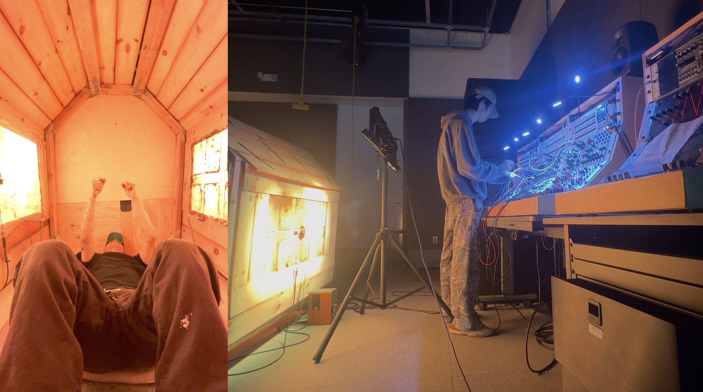
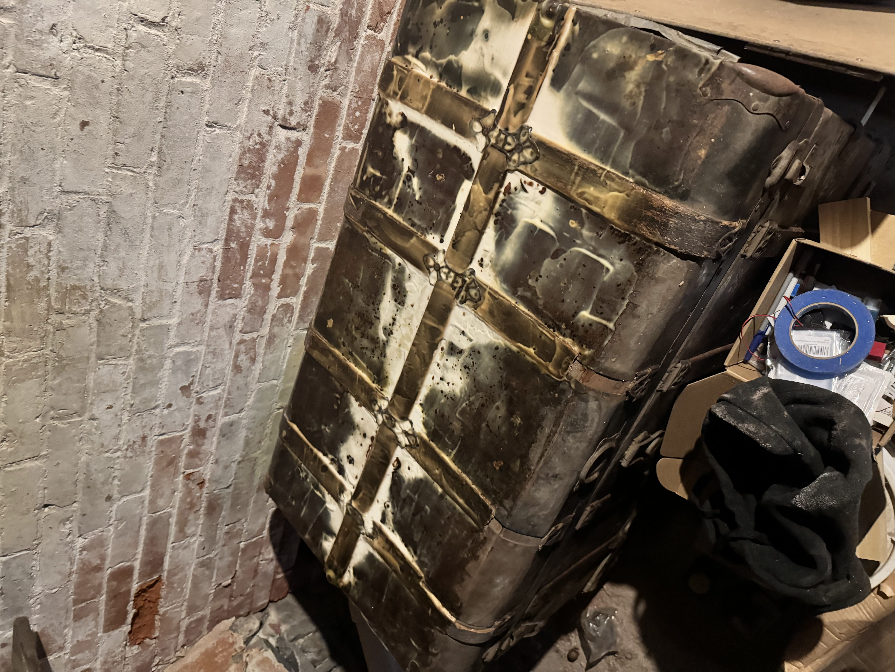
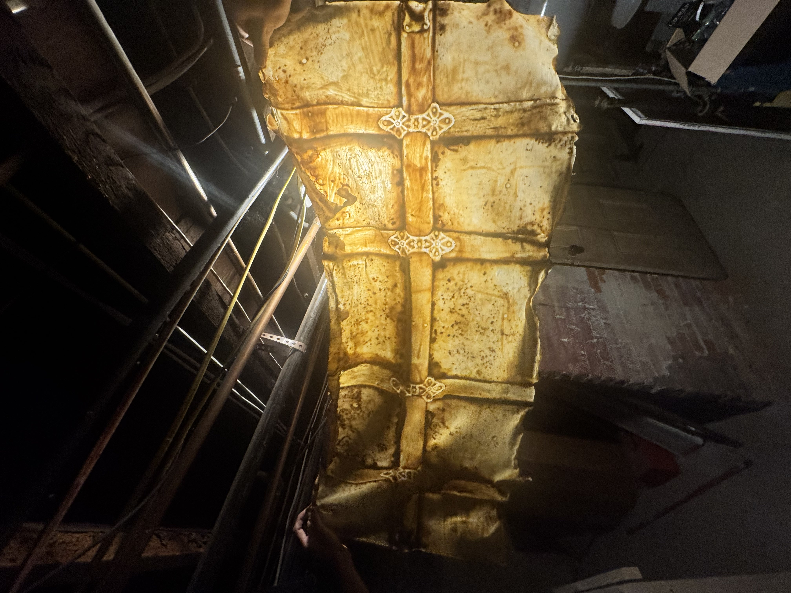
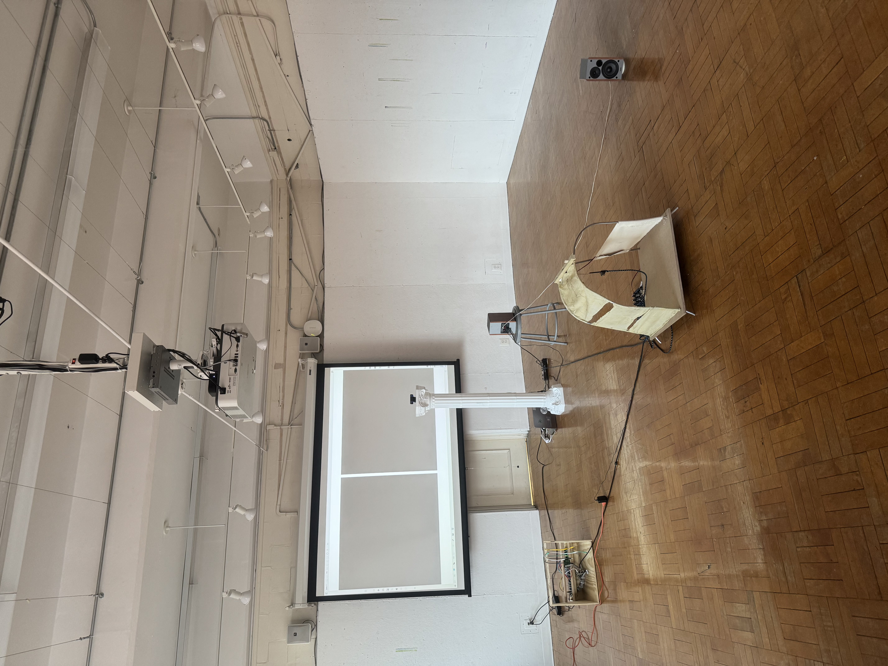
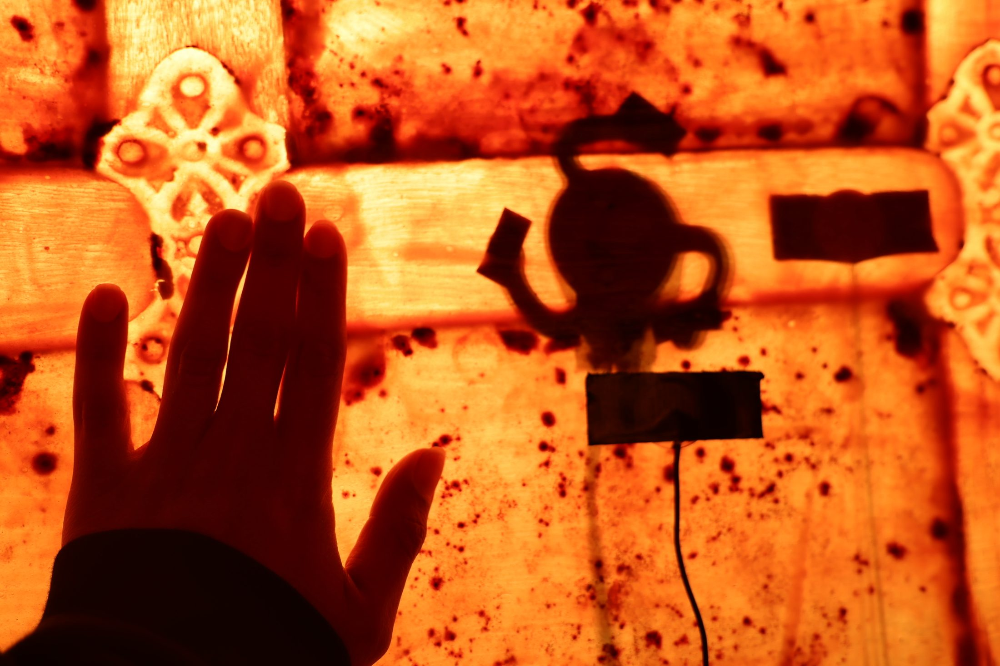
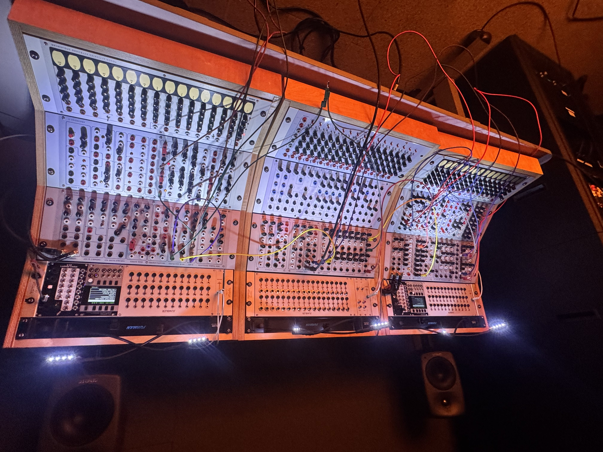
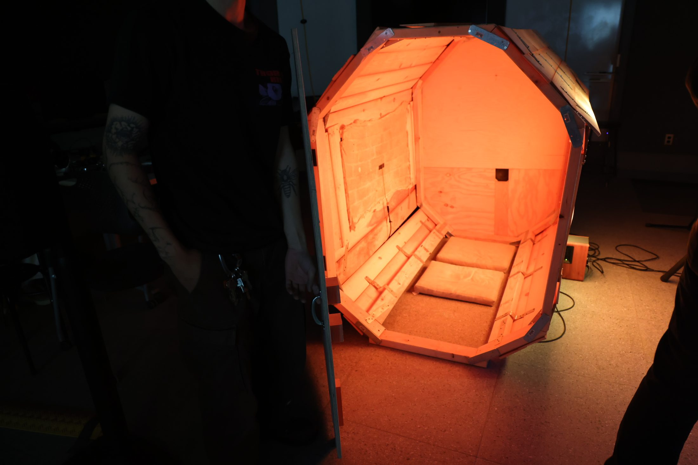
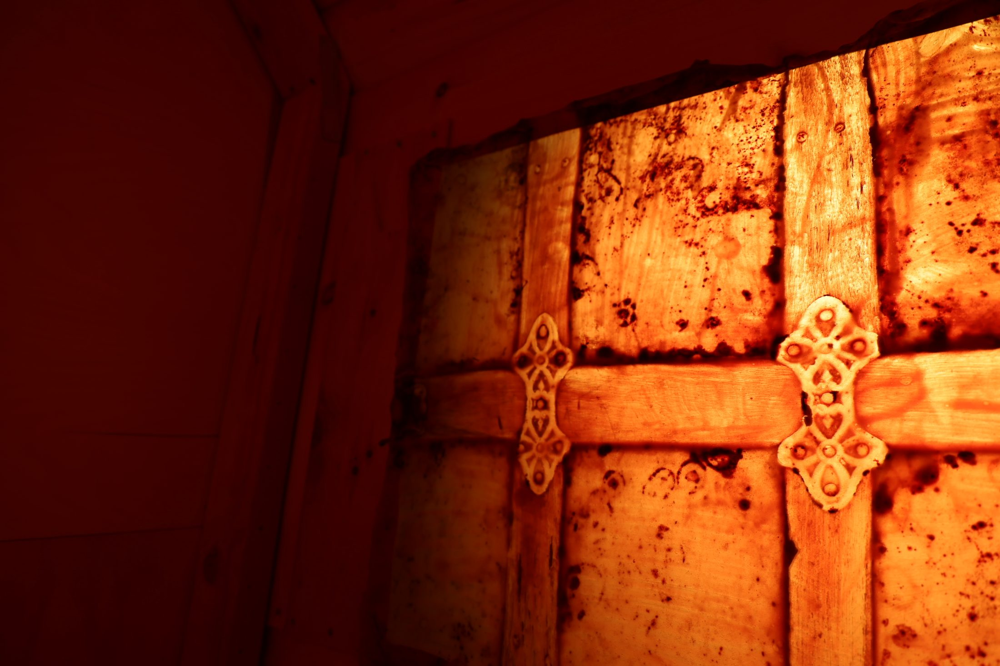
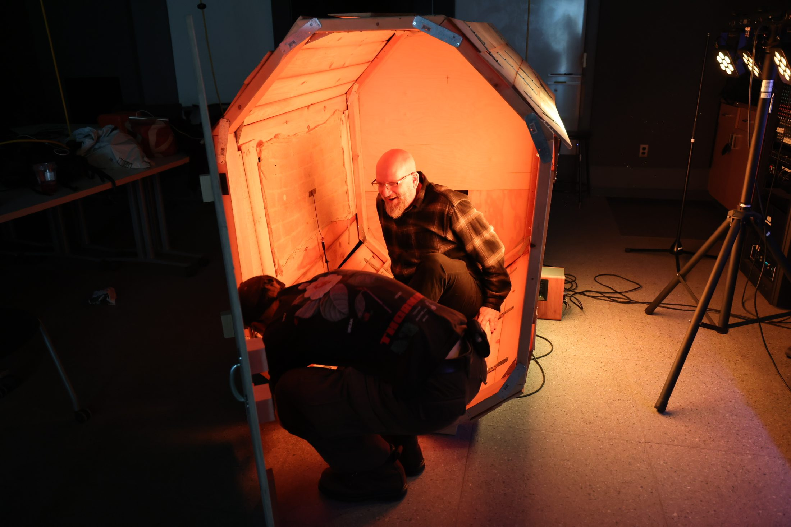
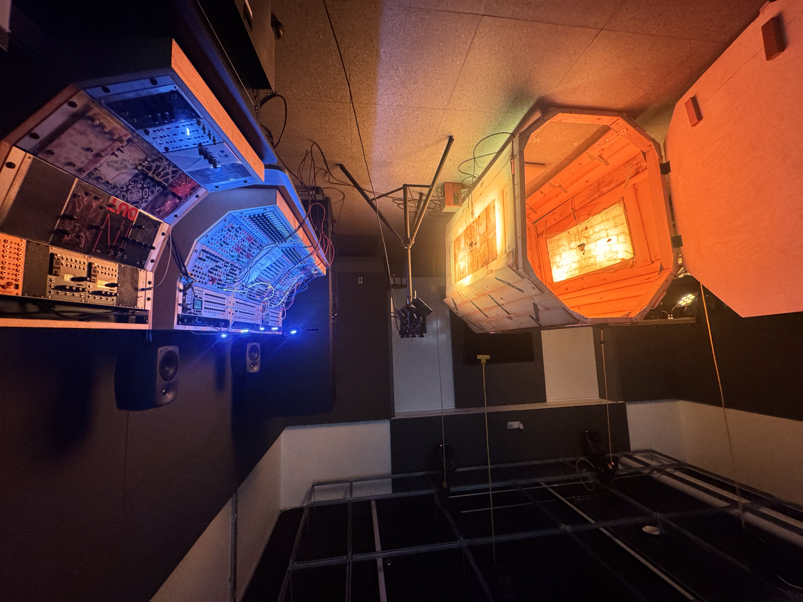

Live Performance & Immersive Installation
Capsule
| Year | 2026 |
|---|---|
| Collaborator | Alex Wu |
| Materials | Serge Modular Synthesizer, contact microphones, transducers, latex, wood, speakers, Zoom L6 audio interface, amplifier |
| Documentation | Performance video below |

Overview
Capsule is a room-scale immersive installation and live performance work that investigates space as a responsive, unstable sound system. A room-size latex membrane that was cast from architectural surfaces found in my basement, embedded with contact microphones and transducers forming a living skin that both records and reactivates the physical environment around it. Viewers enter the structure, interacting with its walls, and listen as their presence is translated into sound: vibrations picked up by contact microphones creating feedback loops with the transducer, routed through a Serge Modular Synthesizer, and fed back into the structure through transducers and speakers mounted on the back and side. The piece exists at the intersection of something being sculptural, acoustic feedback, modular synth interaction and live performance.
The idea for Capsule grew directly out of prior work with SuperCollider, a code-based audio synthesis environment, in which I explored using software to control the Serge Modular Synthesizer and conversely, using the Serge to send control signals back into SuperCollider. Working in that respect, where algorithms and analog hardware pushed and pulled against each other, raised a question I kept thinking about: what happens when a system of sound manipulation is not contained, not patch cables nor codes, but becomes the physical space itself? Further poking at the relationship between human and machine. Capsule was my attempt to make that question inhabitable.
The project begins with a simple proposition: you feel before you hear before you see. Latex, to me, as a material, holds this logic literally, it acts as an architectural skin, capable of recording the imprint of a surface and reactivating its latent vibrations adding specificity. By casting architectural surfaces in latex and embedding contact microphones within the membrane, the history of an object and surface becomes vibrational, interactive, and into audible, real-time sound.
In Capsule, listening is not confined to the audience, it is the operating and fundamental logic behind the entire system. Contact microphones respond to structural vibration; the Serge reads those signals as control voltages and shapes them into sound; the latex membrane receives the speakers’ output and feeds it back as new vibration. Every component is simultaneously an input and an output, always in a state of reception. The system has the ability to self oscillate as a result of feedback loops. The speaker-latex-contact mic feedback loop, where speakers push air into the latex material, which in turn triggers further vibration, creates a self-sustaining system, a living oscillator.




The signal chain operates as a closed feedback ecosystem:
- Contact microphones within the latex membrane pick up structural vibrations from touch and any interaction with the structure
- Signal then is sent to a Zoom L6 audio interface and sent back out to transducers creating feedback loops (careful adjustment of levels on the interface), in which it makes the system self generating and responsive
- The feedback signal from the Zoom L6 headphone output is routed into the Serge Modular Synthesizer’s dedicated audio interface module via line-level input. From the module’s output, the signal is patched directly into the 1V/OCT tracking input of the Dual PCO. Because the 1V/OCT input is designed to receive DC-coupled control voltage, where each one-volt increment corresponds to one octave of pitch change and feeding it an audio-rate signal instead causes the oscillator to track the instantaneous voltage fluctuations of the feedback signal at audio frequency. The effect is closer to FM synthesis than conventional pitch tracking where the sine waves become intertwined with the feedback system’s behavior, their frequencies destabilized and made responsive to every change in the acoustic environment
- Processed audio is sent to passive speakers mounted within and against the latex structure
- During live performance, the Serge Modular Synthesizer is operated in real time, with gestural manipulation of resonant EQ shaping the spectral quality of the feedback signal, Dual Slope Generator controls attack and decay, Freq knob of Dual PCO shifting base pitch of the sine wave manually and Variable Q VCF filters the output
The result is a system that is neither fully controlled nor fully autonomous. It negotiates between the performer’s decisions, the audience’s physical presence, and the acoustic properties of the room itself.
The physical structure is a wooden arch-like frame, cave-like in form built from found scrap wood large enough for 2-3 people to enter and experience. The two side interior walls have stretched out latex similar to a window lit from the outside, embedding the memory of other spaces within this one. The latex is a cast from a mysterious old treasure chest left behind by the previous owner of the house. The chest’s surface, its worn texture and accumulated history, is what drew me to create an imprint and preserve it. Warm light fills the interior, creating an intimate, body-scale environment separate from the larger performance space outside.

Visitors interact with the piece on their own terms: some touch the latex walls directly, producing immediate gestural responses in the sound; others would sit in silence listening to the subtle changes, their presence subtly shifting the acoustic environment; some even beat the latex like a drum. The piece does not instruct its audience. It rewards attentive listening and physical curiosity in equal measure.



The collaboration with Alex Wu was central to the piece’s development. Capsule was always conceived as a negotiation: between performer and machine, between audience and object, between sound and silence, between collaborators. That collaborative logic is built into the system itself.
